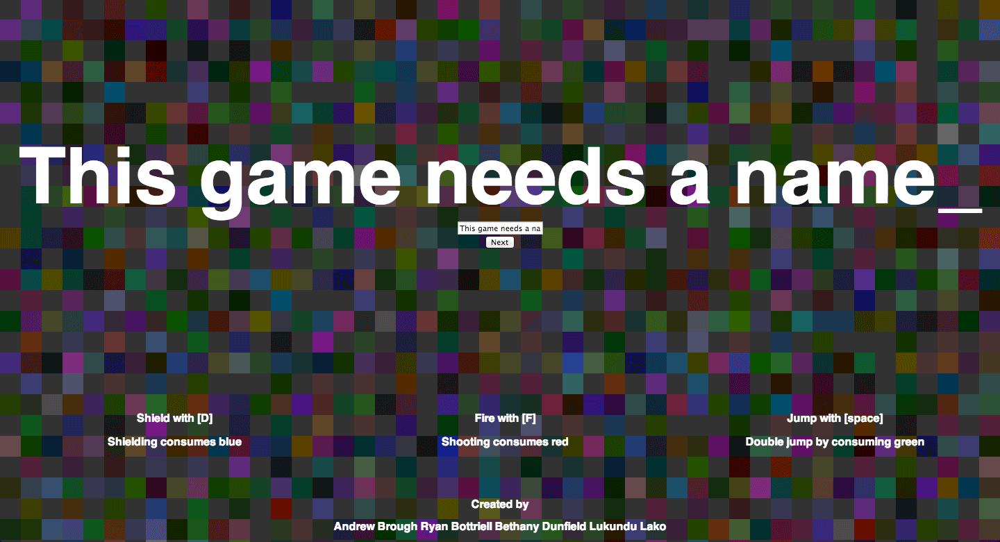
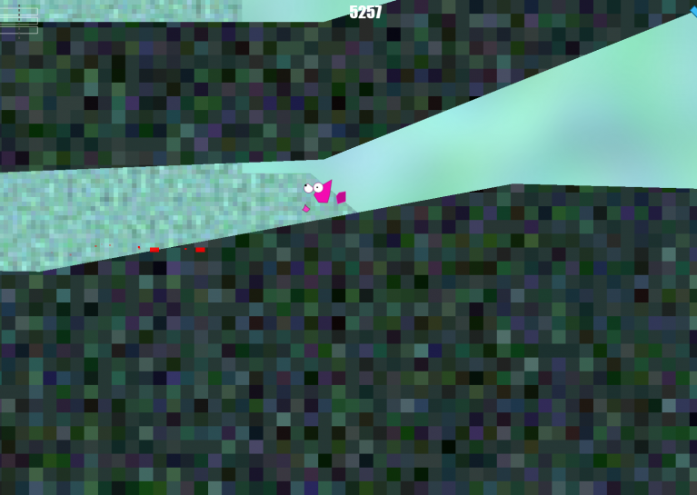

Andrew Brough
I'm a passionate and driven young developer and designer who is fueled by innovation and unique projects. I love working alongside knowledgeable creatives and aim for the highest standards in everything I do. I code, design and create art for my own games and web projects in my free time, and love to tackle a new challenge. Throwing ideas at the wall and seeing what sticks is my forte, and I always have something to contribute in creative discussions. I'm interested in all things related to the fusion of design, user experience, software and hardware.
Projects
Hyperion

Light is your only friend as you try to make your way off of an abandoned space cruiser. Facing your choice of fear, you, the Stowaway, must find your path through the ship. If you stray too far away from light, you will be consumed by darkness. By providing power to portions of the ship and using a lantern to guide your way, you solve puzzles to pass through the ship's unique areas. You hear alarming noises, bumps and bangs as you travel across the ship. You quickly learn that there is also a monster aboard the ship, which stalks you. As you struggle with facing your fears, you struggle with keeping your sanity as you begin to hallucinate shadowy figures. When you learn that the ship is doomed to crash into a nearby planet, you must find a way off the ship, stay alive and avoid the lurking monster...
Midnight is an FPS game built in Unity using C# by my team of 5 students at Carleton University in the Interactive Multimedia and Design program. It is our senior project for which the project timeline is one entire year. The team includes myself, Eva Demers-Brett, Wilhelm Johannes Steyn, Curtis Field and Kat Phuon-Nguyen. The team is structured to utilise two main artists (Hannes and Curtis), one lead programmer (Eva), one assisting programmer (Kat) and one lead designer (Myself), and I also assist with programming.
WebsiteGithub
This Game Needs A Name
 For Global Game Jam 2014, I joined a team with my girlfriend, Bethany Dunfield, and Ryan Bottriell, two coders I've known for a few years now. The challenge: make a game for web, completely procedurally, with no assets at all. We made This Game Needs A Name_. I know what you're thinking - how uncreative! The player is actually asked to enter a name for the game as a way to seed the random level and character generation. It's a side scrolling game where you have to jump over spikes, shoot enemies or use your shield to protect yourself. However, anytime you do an action, it drains your colour (rgb values in the top right corner), so be careful when pressing buttons. The colour is also reflected in the world, and you'll see as you use up all your red, the world only shows the green and blue hues.
We had a lot of fun making it, and though we hit a few snags along the way, we managed to finish the game by the 48 Hour deadline.
Play it here.GGJ2014 site.